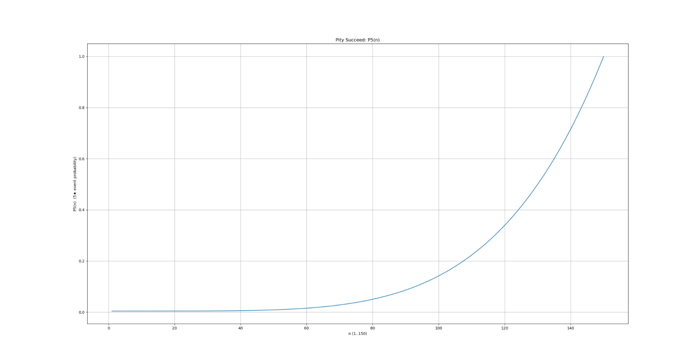
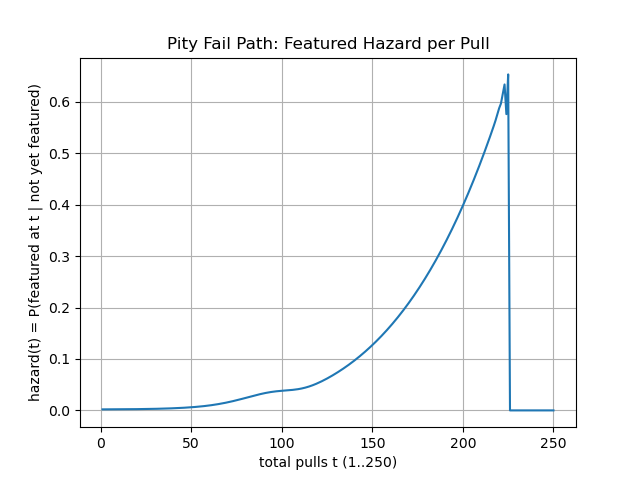
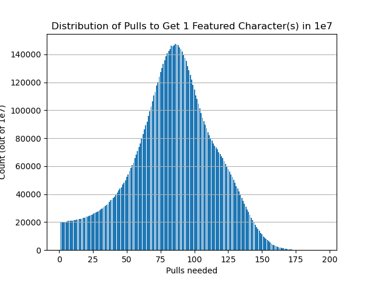
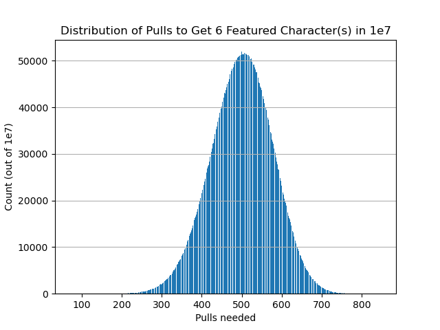
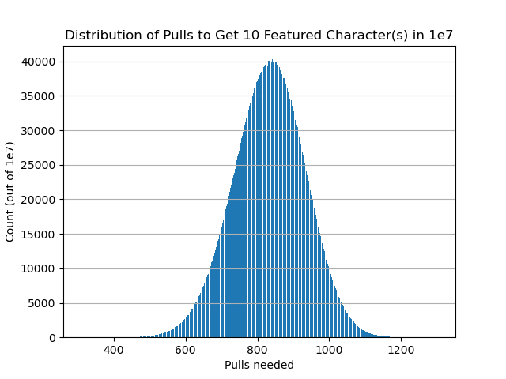

akaMyLife is a gacha simulator RPG. The player lives a life of a fresh graduate in a gacha- and VTuber-oriented world. Daily life is shaped by devotion to beloved VTubers — Minato Aqua, Tokoyami Towa, and Hoshimachi Suisei — expressed through relentless gacha pulling. Experience the struggles, joys, and consequences of being a gacha-addicted StartEnd fan.
This project was heavily inspired by the things I enjoyed during its development, particularly gacha games such as Genshin Impact and Monster Strike, as well as VTubers from Hololive, especially the group named StartEnd. I wanted to create a game that reflects some of my own interests and experiences. This led to the idea of an RPG that combines everyday activities such as working and earning money with gacha mechanics and supporting idols. These interests became the main inspiration behind the game's concept, theme, and core gameplay.
You are a fresh graduate who has recently moved to NHK, a city where people are obsessed with gacha and virtual idols. As you prepare for your very first day at PITA, a new chapter of your life is about to begin. Work, earn money, try your luck with gacha, and immerse yourself in the world of virtual idols. Your working life starts here.
As one of the core mechanics of the game, the gacha system was designed to recreate the tension and excitement of modern gacha games while preventing long periods of bad luck from becoming overly frustrating.
Early pulls are intentionally unpredictable, with characters having a relatively low chance of appearing. As the player continues to pull, the probability gradually increases through a pity system. This creates a sense of growing anticipation while ensuring that every unsuccessful pull still brings the player closer to a guaranteed reward.
Instead of using a fixed drop rate, I designed a power curve that increases the probability of obtaining a character as the player's pity count rises. The curve was adjusted through repeated simulations and data analysis, with the goal of placing the typical character acquisition point at approximately 80–100 pulls while maintaining a hard guarantee at 150 pulls.

Character probability increases progressively with pity, eventually reaching a 100% guarantee at 150 pulls.
Obtaining a high-rarity character does not always guarantee the featured character. The system therefore includes an additional featured-character mechanic. Failing to obtain the featured character increases the player's chance of receiving it during subsequent pulls, eventually leading to a guaranteed featured reward.

The featured-character probability increases after an unsuccessful result, reducing the impact of repeated bad luck.
To evaluate the system beyond individual pulls, I ran large-scale simulations and recorded the number of pulls required to obtain featured characters. This allowed me to examine both the expected outcome and unusually lucky or unlucky cases before adjusting the probability model.

Distribution of pulls required to obtain one featured character.

Across multiple acquisitions, results begin to concentrate around the intended average.

The ten-character simulation demonstrates the long-term consistency of the probability model.
The final model creates a progression from uncertainty to reliability. Early pulls preserve the excitement of chance, while the increasing probability and hard pity progressively reduce the influence of bad luck. Simulation results showed that character acquisition was concentrated around the intended range while extreme outcomes became increasingly uncommon over multiple acquisitions.
The system also supports the wider theme of the game. Since the world is built around a society obsessed with gacha and virtual idols, mechanics such as pity, featured characters, banner cycles and saving currency are designed to resemble systems found in commercial gacha games. This makes the gacha system both a gameplay mechanic and part of the game's role-playing experience.